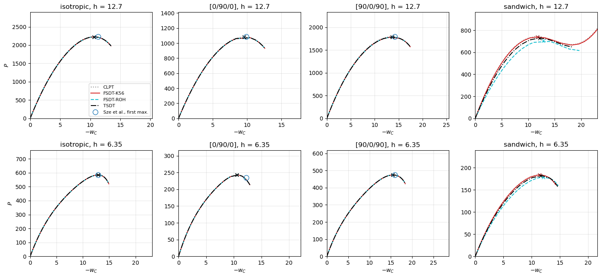

Limit loads of hinged cylindrical roofs: Sabir and Lock (1972), Sze et al. (2004)#
Sze, X. H. Liu and S. H. Lo, Popular benchmark problems for geometric nonlinear analysis of shells, Finite Elements in Analysis and Design 40 (2004) 1551-1569, Section 3.8.
The hinged cylindrical roof of Sabir and Lock (1972) under a central point load \(P\), a snap-through problem traced with the Riks method:
radius \(R = 2540\), axial length \(2L = 508\) with free curved edges, half-angle \(\theta = 0.1\) rad, i.e. hinged straight edges \(0.2 R\) apart, thickness \(h\) = 12.7 and 6.35, consistent units;
isotropic, \(E = 3102.75\), \(\nu = 0.3\); laminated \([0/90/0]\) and \([90/0/90]\) with plies of equal thickness, 0 deg along the axis, \(E_L = 3300\), \(E_T = 1100\), \(G_{LT} = 660\), \(\nu_{LT} = 0.25\); \(G_{TT}\), not given by Sze et al., is taken as \(G_{LT}\);
reference: the load-deflection paths of ABAQUS S4R elements of Tables 9a-f, \(P/P_{max}\) with \(P_{max} = 3000\) against the central deflection \(-W_C\), whose first maxima are the limit loads compared here.
The roofs are thin, \(R/h\) = 200 and 400, and the transverse shear has little effect: the case checks the nonlinear analyses of the models with shear deformation, and the convergence and the settings of the Riks method that the comparison requires. The first maxima read from the tables of Sze et al. are stored in scf_validation_utils.SZE_2004, as \((P/P_{max}, -W_C)\). A sandwich roof, isotropic faces of \(h/10\) and a core with \(E_c = E/100\), \(\nu_c = 0.3\), without
literature reference, is also included and compared with the TSDT.
[1]:
%matplotlib inline
import os
import time
from concurrent.futures import ProcessPoolExecutor
import multiprocessing
import numpy as np
import matplotlib.pyplot as plt
from IPython.display import Markdown, display
import scf_validation_utils as su
from scf_validation_utils import pct, markdown_table
# True runs panels again, otherwise the results saved in RESULTS are loaded
RERUN = True
RESULTS = 'results'
panels model#
The roof is modelled by su.hinged_roof, a cylindrical panel with Sanders’ kinematics, cylshell_clpt_sanders, cylshell_fsdt_sanders and cylshell_tsdt_sanders, with \(12 \times 12\) terms, the straight edges hinged (\(u = v = w = 0\), rotations free) and the curved edges free. The models are the CLPT, the FSDT with \(\kappa = 5/6\) (K56) and with 'rohwer' (ROH), and the TSDT. The central point load is incremented,
add_point_load(a/2, b/2, 0, 0, -Pref, cte=False), with the reference load \(P_{ref} = 4000 (h/12.7)^{2.5}\), above the limit loads, and the path is traced with the Riks method of structsolve, su.roof_limit_load:
an = Analysis(s.calc_fext, s.calc_fint, calc_kC, s.calc_kG)
an.NL_method = 'arc_length_riks'
an.initialInc = an.maxInc = 0.01
an.maxArcLength = 8.
increments, cs = an.static(NLgeom=True)
The settings matter:
Step cap.
maxInclimits the arc length of each step, relative to the linear solution at the load factor 1, butstructsolvecaps the step atmax(maxInc, initial arc length), soinitialIncmust not be larger thanmaxInc, henceinitialInc = maxInc = 0.01. With larger steps the paths of the sandwich roofs may jump over the limit point, see the step-cap check below.First maximum. The limit load is the first local maximum of the load along the path followed by a drop of more than 0.1%,
su.first_maximum, as the first maxima of the tables of Sze et al., refined with a parabola through the three points around it in terms of the length along the path in the plane of \(P/P_{ref}\) and \(w_C/h\),su.refine_peak; the paths may recover after it. Each path is stopped once the load has dropped 10% below its first maximum, by a wrapper ofcalc_kC, whichstructsolvecalls at the start of each step,su.nonlinear_path(..., stop_after_limit=0.9).Convergence. The thin roofs need \(12 \times 12\) terms: with \(8 \times 8\) the limit load of the thin \([0/90/0]\) roof is about 15% too high, see below.
Computation. compute() below runs the 36 analyses, the 32 paths of the table, two of the convergence check and two of the step-cap check, in parallel processes, one per core, and saves them in results/sze2004_hinged_roofs.json; with RERUN = False that file is loaded instead. The column time is the wall time of each run, measured on the cluster node that executed this notebook (hpc12, 8 cores, 8 runs at a time); the 36 runs took 2879 s of wall time and 11.5 hours in total.
[2]:
KINDS = ('isotropic', '[0/90/0]', '[90/0/90]', 'sandwich')
THICKNESSES = (12.7, 6.35)
MODELS = [('CLPT', 'clpt', 'ROH'), ('FSDT-K56', 'fsdt', 'K56'), ('FSDT-ROH', 'fsdt', 'ROH'), ('TSDT', 'tsdt', 'ROH')]
def run(args):
theory, scf, kind, h, kwargs = args
t0 = time.time()
out = su.roof_limit_load(theory, scf, kind, h, **kwargs)
out['time'] = time.time() - t0
return out
def compute():
jobs = {}
for kind in KINDS:
for h in THICKNESSES:
for label, theory, scf in MODELS:
jobs[('paths', '%s h%g' % (kind, h), label)] = (theory, scf, kind, h, {})
# convergence of the thin [0/90/0] roof, CLPT; 12 terms is the run above
for m in (8, 16):
jobs[('convergence', str(m), None)] = ('clpt', 'ROH', '[0/90/0]', 6.35, dict(m=m))
# step cap: initial_inc = 0.1 > max_inc = 0.01
for kind, h in (('[0/90/0]', 6.35), ('sandwich', 12.7)):
jobs[('step_cap', '%s h%g' % (kind, h), None)] = ('clpt', 'ROH', kind, h, dict(initial_inc=0.1))
# the longest runs first
order = sorted(jobs, key=lambda k: (k[1] != 'sandwich h12.7', k[1] != '16', 'TSDT' != k[2]))
with ProcessPoolExecutor(max_workers=os.cpu_count(), mp_context=multiprocessing.get_context('fork')) as ex:
outs = dict(zip(order, ex.map(run, [jobs[k] for k in order])))
res = {'paths': {}, 'convergence': {}, 'step_cap': {}}
for (group, key, label), out in outs.items():
if label is None:
res[group][key] = out
else:
res[group].setdefault(key, {})[label] = out
return res
t0 = time.time()
res = su.run_or_load(os.path.join(RESULTS, 'sze2004_hinged_roofs.json'), compute, rerun=RERUN)
print('wall time of the cell: %.0f s, sum of the run times: %.0f s'
% (time.time() - t0, sum(o['time'] for v in res['paths'].values() for o in v.values())
+ sum(o['time'] for g in ('convergence', 'step_cap') for o in res[g].values())))
LABELS = [m[0] for m in MODELS]
computed in 2879 s, saved to results/sze2004_hinged_roofs.json
wall time of the cell: 2879 s, sum of the run times: 41246 s
Limit loads#
First maximum of the load, \(P_{lim}\), and the central deflection at that point, \(-w_C\), against the first maxima of Tables 9a-f of Sze et al., \(P_{lim} = 3000 \times P/P_{max}\), with the difference in parentheses; for the sandwich roofs, against the TSDT. steps is the number of converged Riks steps up to the limit point and dw the largest increment of \(w_C/h\) of one step up to it, a check of the resolution of the path.
[3]:
rows = []
for kind in KINDS:
for h in THICKNESSES:
r = res['paths']['%s h%g' % (kind, h)]
sze = su.SZE_2004.get((kind, h))
ref = sze[0]*su.PMAX_SZE if sze else r['TSDT']['Plim']
row = [kind, h, '%.1f / %.3f' % (sze[0]*su.PMAX_SZE, sze[1]) if sze else '- (TSDT: %.1f)' % ref]
for m in LABELS:
o = r[m]
row.append('%.1f (%+.2f%%) / %.2f' % (o['Plim'], pct(o['Plim'], ref), -o['w_lim']) if o['has_limit'] else 'no limit')
rows.append(row)
display(Markdown(markdown_table(['shell', '$h$', 'Sze et al.: $P_{lim}$ / $-W_C$']
+ ['%s: $P_{lim}$ / $-w_C$' % m for m in LABELS], rows)))
rows = []
for kind in KINDS:
for h in THICKNESSES:
r = res['paths']['%s h%g' % (kind, h)]
rows.append([kind, h] + ['%d / %.3f / %.0f s' % (su.first_maximum(o['P']) + 1, o['dw_max'], o['time']) for o in
(r[m] for m in LABELS)])
display(Markdown(markdown_table(['shell', '$h$'] + ['%s: steps / dw / time' % m for m in LABELS], rows)))
shell |
\(h\) |
Sze et al.: \(P_{lim}\) / \(-W_C\) |
CLPT: \(P_{lim}\) / \(-w_C\) |
FSDT-K56: \(P_{lim}\) / \(-w_C\) |
FSDT-ROH: \(P_{lim}\) / \(-w_C\) |
TSDT: \(P_{lim}\) / \(-w_C\) |
|---|---|---|---|---|---|---|
isotropic |
12.7 |
2226.3 / 11.293 |
2229.4 (+0.14%) / 10.58 |
2225.1 (-0.05%) / 10.66 |
2225.1 (-0.05%) / 10.66 |
2225.1 (-0.05%) / 10.66 |
isotropic |
6.35 |
585.9 / 12.892 |
585.4 (-0.09%) / 12.87 |
584.4 (-0.26%) / 12.87 |
584.4 (-0.26%) / 12.87 |
584.4 (-0.26%) / 12.87 |
[0/90/0] |
12.7 |
1085.4 / 9.884 |
1084.2 (-0.11%) / 9.54 |
1083.4 (-0.19%) / 9.59 |
1083.3 (-0.19%) / 9.59 |
1083.3 (-0.19%) / 9.59 |
[0/90/0] |
6.35 |
234.6 / 12.280 |
243.5 (+3.79%) / 10.53 |
243.3 (+3.73%) / 10.54 |
243.3 (+3.72%) / 10.54 |
243.3 (+3.72%) / 10.54 |
[90/0/90] |
12.7 |
1791.0 / 14.192 |
1792.3 (+0.07%) / 13.54 |
1783.3 (-0.43%) / 13.60 |
1784.2 (-0.38%) / 13.65 |
1783.8 (-0.40%) / 13.65 |
[90/0/90] |
6.35 |
475.5 / 15.905 |
475.0 (-0.10%) / 15.46 |
474.5 (-0.22%) / 15.47 |
474.5 (-0.22%) / 15.47 |
474.5 (-0.22%) / 15.47 |
sandwich |
12.7 |
|
741.3 (+1.84%) / 11.68 |
739.7 (+1.62%) / 11.81 |
703.9 (-3.30%) / 12.82 |
727.9 (+0.00%) / 12.13 |
sandwich |
6.35 |
|
184.4 (+1.21%) / 11.37 |
183.9 (+0.92%) / 11.41 |
178.8 (-1.86%) / 12.02 |
182.2 (+0.00%) / 11.58 |
shell |
\(h\) |
CLPT: steps / dw / time |
FSDT-K56: steps / dw / time |
FSDT-ROH: steps / dw / time |
TSDT: steps / dw / time |
|---|---|---|---|---|---|
isotropic |
12.7 |
64 / 0.023 / 1085 s |
61 / 0.031 / 1201 s |
61 / 0.031 / 1172 s |
61 / 0.031 / 2179 s |
isotropic |
6.35 |
83 / 0.085 / 1301 s |
82 / 0.089 / 1452 s |
82 / 0.089 / 1458 s |
82 / 0.089 / 2696 s |
[0/90/0] |
12.7 |
28 / 0.085 / 538 s |
28 / 0.163 / 624 s |
28 / 0.165 / 616 s |
28 / 0.162 / 1170 s |
[0/90/0] |
6.35 |
34 / 0.195 / 631 s |
34 / 0.218 / 742 s |
34 / 0.218 / 733 s |
34 / 0.218 / 1367 s |
[90/0/90] |
12.7 |
46 / 0.078 / 856 s |
46 / 0.099 / 964 s |
47 / 0.094 / 959 s |
46 / 0.100 / 1895 s |
[90/0/90] |
6.35 |
66 / 0.132 / 1075 s |
66 / 0.138 / 1225 s |
66 / 0.137 / 1221 s |
66 / 0.138 / 2250 s |
sandwich |
12.7 |
24 / 0.085 / 1530 s |
21 / 0.107 / 1674 s |
19 / 0.229 / 597 s |
19 / 0.124 / 1065 s |
sandwich |
6.35 |
28 / 0.165 / 529 s |
27 / 0.194 / 619 s |
27 / 0.170 / 668 s |
27 / 0.274 / 1161 s |
[4]:
keys = [k for k in su.SZE_2004]
cols = {m: [pct(res['paths']['%s h%g' % k][m]['Plim'], su.SZE_2004[k][0]*su.PMAX_SZE) for k in keys] for m in LABELS}
display(Markdown('**All six roofs of Sze et al.**'))
display(Markdown(su.stats_table(cols)))
cols = {m: [pct(res['paths']['%s h%g' % k][m]['Plim'], su.SZE_2004[k][0]*su.PMAX_SZE) for k in keys
if k != ('[0/90/0]', 6.35)] for m in LABELS}
display(Markdown('**Without the thin $[0/90/0]$ roof**'))
display(Markdown(su.stats_table(cols)))
All six roofs of Sze et al.
model |
max abs. diff. (%) |
mean abs. diff. (%) |
range (%) |
|---|---|---|---|
CLPT |
3.8 |
0.7 |
-0.1 to +3.8 |
FSDT-K56 |
3.7 |
0.8 |
-0.4 to +3.7 |
FSDT-ROH |
3.7 |
0.8 |
-0.4 to +3.7 |
TSDT |
3.7 |
0.8 |
-0.4 to +3.7 |
Without the thin :math:`[0/90/0]` roof
model |
max abs. diff. (%) |
mean abs. diff. (%) |
range (%) |
|---|---|---|---|
CLPT |
0.1 |
0.1 |
-0.1 to +0.1 |
FSDT-K56 |
0.4 |
0.2 |
-0.4 to -0.1 |
FSDT-ROH |
0.4 |
0.2 |
-0.4 to -0.1 |
TSDT |
0.4 |
0.2 |
-0.4 to -0.1 |
Load-deflection paths#
Paths of panels up to 10% past the first maximum, with the first maximum of Sze et al. (circle) and the refined limit points of panels (crosses).
[5]:
styles = {'CLPT': dict(color='0.55', ls=':'), 'FSDT-K56': dict(color='tab:red'),
'FSDT-ROH': dict(color='tab:cyan', ls='--'), 'TSDT': dict(color='k', ls='-.')}
fig, axes = plt.subplots(2, 4, figsize=(15, 7))
for j, kind in enumerate(KINDS):
for i, h in enumerate(THICKNESSES):
ax = axes[i, j]
r = res['paths']['%s h%g' % (kind, h)]
for m in LABELS:
o = r[m]
ax.plot(-np.r_[0, o['wc']], np.r_[0, o['P']], label=m, **styles[m])
ax.plot(-o['w_lim'], o['Plim'], 'x', color=styles[m]['color'])
sze = su.SZE_2004.get((kind, h))
if sze:
ax.plot(sze[1], sze[0]*su.PMAX_SZE, 'o', mfc='none', mec='tab:blue', ms=9, label='Sze et al., first max.')
top = max([r[m]['Plim'] for m in LABELS] + ([sze[0]*su.PMAX_SZE] if sze else []))
right = max([-r[m]['w_lim'] for m in LABELS] + ([sze[1]] if sze else []))
ax.set_ylim(0, 1.3*top)
ax.set_xlim(0, 1.8*right)
ax.set_title('%s, h = %g' % (kind, h))
ax.set_xlabel('$-w_C$')
ax.grid(alpha=0.3)
axes[0, 0].set_ylabel('$P$')
axes[1, 0].set_ylabel('$P$')
axes[0, 0].legend(fontsize=8)
plt.tight_layout()
plt.show()

Riks settings#
Convergence of the Ritz approximation#
The CLPT of the thin \([0/90/0]\) roof, \(h = 6.35\), the most demanding case, with \(8 \times 8\), \(12 \times 12\) and \(16 \times 16\) terms.
[6]:
ref = su.SZE_2004[('[0/90/0]', 6.35)][0]*su.PMAX_SZE
conv = {'8': res['convergence']['8'], '12': res['paths']['[0/90/0] h6.35']['CLPT'], '16': res['convergence']['16']}
rows = [['%s x %s' % (m, m), '%.2f' % o['Plim'], '%+.2f%%' % pct(o['Plim'], ref), '%.3f' % -o['w_lim'],
'%+.2f%%' % pct(o['Plim'], conv['16']['Plim']), '%.0f s' % o['time']] for m, o in conv.items()]
display(Markdown(markdown_table(['terms', '$P_{lim}$', 'vs Sze et al.', '$-w_C$', 'vs 16 x 16', 'time'], rows)))
terms |
\(P_{lim}\) |
vs Sze et al. |
\(-w_C\) |
vs 16 x 16 |
time |
|---|---|---|---|---|---|
8 x 8 |
269.34 |
+14.81% |
10.966 |
+10.66% |
77 s |
12 x 12 |
243.50 |
+3.79% |
10.531 |
+0.04% |
631 s |
16 x 16 |
243.39 |
+3.75% |
10.692 |
+0.00% |
2879 s |
Step cap#
The same CLPT runs (\(12 \times 12\) terms) with initialInc = 0.1 and maxInc = 0.01: the step is capped at the initial arc length, ten times larger than intended.
[7]:
rows = []
for key, o in res['step_cap'].items():
good = res['paths'][key]['CLPT']
kind, h = key.rsplit(' h', 1)
i = su.first_maximum(o['P'])
rows.append([kind, h, '%d steps, %s' % (len(o['P']), ('$P_{lim}$ = %.1f, $-w_C$ = %.2f, dw = %.3f'
% (o['Plim'], -o['w_lim'], o['dw_max'])) if o['has_limit']
else 'no limit point, $P$ = %.1f at the end' % o['P'][-1]),
'%d steps, $P_{lim}$ = %.1f, $-w_C$ = %.2f, dw = %.3f' % (len(good['P']), good['Plim'], -good['w_lim'],
good['dw_max'])])
display(Markdown(markdown_table(['shell', '$h$', 'initialInc = 0.1, maxInc = 0.01', 'initialInc = maxInc = 0.01'], rows)))
shell |
\(h\) |
initialInc = 0.1, maxInc = 0.01 |
initialInc = maxInc = 0.01 |
|---|---|---|---|
sandwich |
12.7 |
28 steps, \(P_{lim}\) = 731.7, \(-w_C\) = 12.09, dw = 0.427 |
115 steps, \(P_{lim}\) = 741.3, \(-w_C\) = 11.68, dw = 0.085 |
[0/90/0] |
6.35 |
9 steps, \(P_{lim}\) = 243.2, \(-w_C\) = 10.52, dw = 0.579 |
39 steps, \(P_{lim}\) = 243.5, \(-w_C\) = 10.53, dw = 0.195 |
Discussion#
Limit loads. For five of the six roofs of Sze et al. all models are within 0.43% of the first maximum of the S4R paths: the CLPT within \(-0.11\%\) to \(+0.14\%\), and the FSDT (\(\kappa = 5/6\) and
'rohwer') and the TSDT within \(-0.43\%\) to \(-0.05\%\). The thin \([0/90/0]\) roof, \(h = 6.35\), remains \(+3.7\%\) (shear deformable models) to \(+3.8\%\) (CLPT) above Sze et al. for all models, and this difference is not a convergence error of panels: with \(12 \times 12\) and \(16 \times 16\) terms the limit loads of the CLPT, 243.50 and 243.39, agree within 0.04%, and it is not due to the assumed \(G_{TT}\), on which the CLPT does not depend; it probably comes from the S4R solution of the reference.Transverse shear. These roofs are thin, \(R/h\) = 200 and 400 with \(h/b\) = 0.025 and 0.0125: the shear deformable models are 0.06% to 0.5% below the CLPT and within 0.05% of each other, so the comparison verifies the geometrically nonlinear FSDT and TSDT of panels and the Riks analyses rather than the shear corrections. The central deflections at the limit points, \(-w_C\), differ more from those of Sze et al. (e.g. 10.53 against 12.28 for the thin \([0/90/0]\) roof), since the load is stationary there and the deflection at the maximum is ill-conditioned.
Convergence. With \(8 \times 8\) terms the limit load of the thin \([0/90/0]\) roof is 14.8% above Sze et al. and 10.7% above the \(16 \times 16\) value; \(12 \times 12\) terms, the setting used here, are converged within 0.04%.
Step cap. With
initialInc = 0.1andmaxInc = 0.01the step is capped at the initial arc length,max(maxInc, initialInc): the \([0/90/0]\) roof is traced with 9 steps instead of 39, a jump of \(0.58 h\) in \(w_C\) per step, and the limit load (243.2) is still close thanks to the parabolic refinement, but for the sandwich roof, \(h = 12.7\), the 28 coarse steps give 731.7 instead of 741.3 (\(-1.3\%\)) and a deflection 3.5% larger. WithinitialInc = maxInc = 0.01the largest increment of \(w_C/h\) of one step up to the limit point is 0.02 to 0.27.First maximum. For the sandwich roof with \(h = 12.7\), the paths of the CLPT and of the FSDT with \(\kappa = 5/6\) drop by less than 10% after the first maximum and then recover and continue up to \(P_{ref} = 4000\) (the figure is cut): the limit load is the first maximum, 741.3 and 739.7, not the largest load of the path.
Sandwich roofs. Without a literature reference, the FSDT with
'rohwer'is \(-3.3\%\) (\(h = 12.7\)) and \(-1.9\%\) (\(h = 6.35\)) from the TSDT, and the FSDT with \(\kappa = 5/6\) and the CLPT \(+0.9\%\) to \(+1.8\%\) above it; with the soft core (\(E_c = E/100\)) the transverse shear of the core lowers the limit load by 3% to 5% from the CLPT to the FSDT with'rohwer', which is more flexible than the TSDT, as for the static sandwich plates of Pagano (1970).